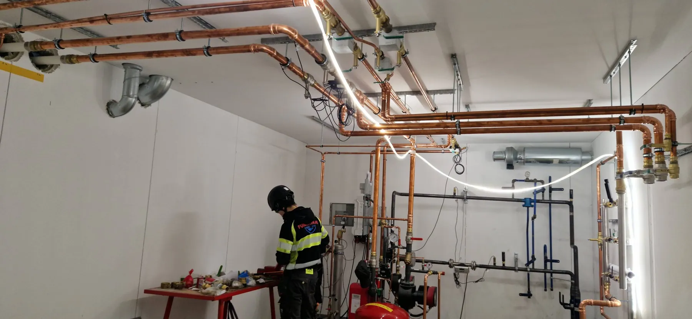
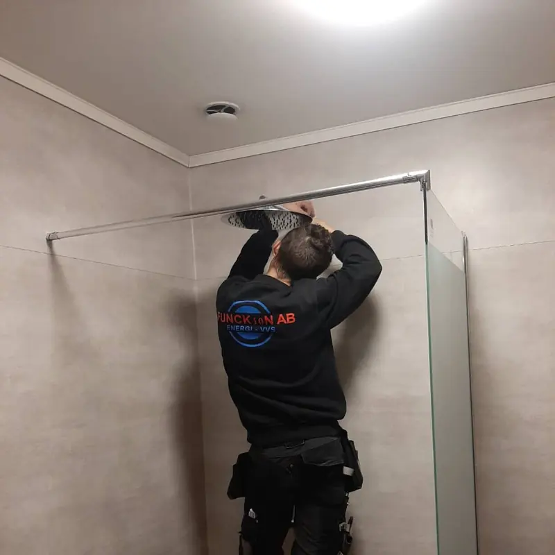
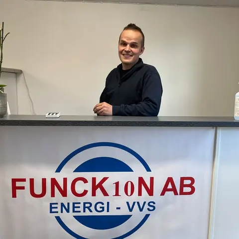

Vatten. Värme.
Väl utfört.
Din VVS-partner i Kiruna. Från det lilla jobbet hemma till installationen som får hela fastigheten att fungera.
Det ska bara
fungera.
Varmt hemma. Vatten i kranen.
Ett badrum att trivas i.
Vi hjälper privatpersoner och företag med installation, service och rådgivning inom VVS. Med lokal närvaro i Kiruna och omsorg om varje installation.
Lär känna Funck10nHantverket
bakom funktionen.
Från rördragningen till det färdiga badrummet. Här är ett urval av bilder från vår verksamhet.
Se fler av våra arbeten
Lokalt förankrade.
Personligt engagerade.
Vi har arbetat med VVS i Kiruna sedan 2016. För oss handlar ett bra jobb om att både installationen och kontakten med dig ska fungera.
Du får hjälp av erfarna installatörer, oavsett om uppdraget gäller ditt hem eller företagets fastighet.
Mer om ossFrån första frågan
till en bra lösning.
Berätta vad du behöver
Ring eller mejla Peter. Beskriv ditt projekt, vad du vill förändra eller vad som behöver åtgärdas.
Vi går igenom alternativen
Vi hjälper dig att hitta rätt väg framåt utifrån fastigheten, dina behov och installationen.
Dags att få det gjort
När vi är överens om uppdraget planerar vi arbetet tillsammans med dig.
Vad kan vi
hjälpa dig med?
Ett nytt projekt eller något som behöver ses över?
Hör av dig för rådgivning och en kostnadsfri offert.
